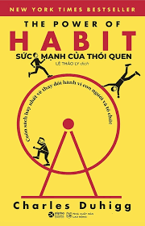

Sức Mạnh Của Thói Quen |
|
|---|---|
|  | Tác giả: Charles Duhigg |
| Năm phát hành: 2012 | |
| Thể loại: Tâm lý học | |
| Độ dài: 436 | |
Nội dụng của cuốn:Những thói quen có thể hình thành trong vô thức, hoặc có ý thức. Và thói quen dù tốt hay xấu đều có thể ảnh hưởng đến toàn bộ cuộc đời của bạn. Cuốn sách về tâm lý học của Charles Duhigg - Sức Mạnh Của Thói Quen đã nói lên tầm quan trọng của thói quen cũng như cách kiểm soát những thói quen tốt, xấu của bạn. |
|